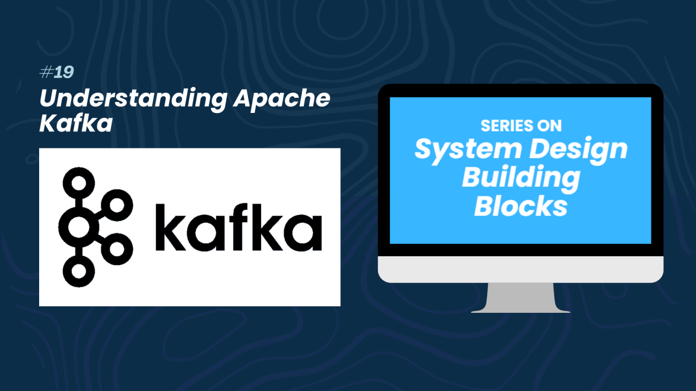

Understanding Apache Kafka and Its Role in Modern System Design
Ashmita Pandey · · System Design · Distributed Systems · Kafka

When building large scale applications, one of the biggest challenges is handling data reliably and in real time. As systems grow, direct communication between services becomes difficult to manage, scale, and maintain. Apache Kafka addresses this challenge by enabling systems to communicate through events instead of direct calls.
Apache Kafka is widely used in modern backend systems to build scalable, fault tolerant, and real time data pipelines.
What is Apache Kafka?
Apache Kafka is a distributed event streaming platform designed to publish, store, and process streams of data in real time. It allows multiple systems to produce and consume events asynchronously.
Instead of one service directly calling another, Kafka acts as an intermediary where events are written once and consumed by multiple systems independently. This design improves scalability and system reliability.
Core Components of Kafka
Producer A producer is responsible for sending data to Kafka. Producers publish events to specific topics without needing to know which services will consume them.
Topic A topic represents a stream of events. All messages related to a particular domain or feature are stored under a topic.
Partition Topics are divided into partitions. Each partition is an ordered, immutable sequence of records. Partitions allow Kafka to scale horizontally and handle large volumes of data efficiently.
Consumer Consumers read data from topics. They can be grouped into consumer groups to distribute the load and process data in parallel.
Broker A broker is a Kafka server that stores data and serves read and write requests from producers and consumers.
How Kafka Works
When a producer sends data, it is written to a topic partition on a broker. The data is stored on disk and replicated across multiple brokers to ensure fault tolerance.
Consumers read data by maintaining offsets, which indicate how much data has already been processed. This allows consumers to replay data if needed, making Kafka suitable for both real time and batch processing use cases.
Key Characteristics of Apache Kafka
- High throughput messaging with low latency
- Horizontal scalability through partitions
- Fault tolerance using replication
- Decoupled communication between services
- Persistent storage of events
These characteristics make Kafka a strong foundation for event driven systems.
Real World Use Case
Consider an online food delivery platform handling thousands of orders per minute.
When a user places an order:
- The order service publishes an event to Kafka
- The payment service consumes the event and processes payment
- The delivery service assigns a delivery partner
- The notification service sends updates to the user
- The analytics system records the event for reporting
Each service operates independently, and failures in one service do not block others. Kafka ensures reliable event delivery across the system.
Advantages of Using Kafka
- Enables event driven architecture
- Improves system scalability and resilience
- Supports multiple consumers for the same data
- Handles large data volumes efficiently
- Allows replaying events for recovery and debugging
Challenges of Using Kafka
- Requires operational expertise to manage clusters
- Monitoring and alerting are essential
- Message ordering is guaranteed only within a partition
- Overkill for small or simple applications
When Should You Use Kafka?
Kafka is a good choice when your system:
- Requires real time data processing
- Needs high availability and fault tolerance
- Has multiple independent services consuming the same data
- Handles continuous streams of events
For early stage applications or small systems, simpler messaging solutions may be more appropriate.
Key Takeaway
Apache Kafka enables a shift from tightly coupled systems to event driven architectures. It helps build scalable and reliable systems, but it should be adopted with a clear understanding of its complexity and operational requirements.
Used correctly, Kafka becomes a powerful backbone for modern distributed systems.
Thanks for reading!